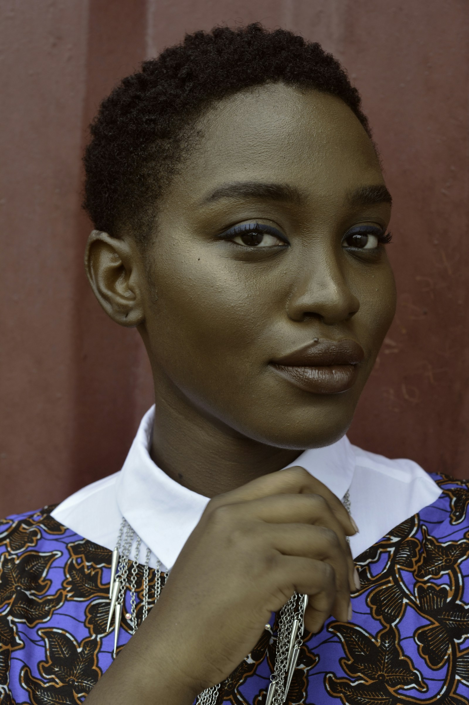

Prevenzione e igiene
Un’attenzione regolare, costruita intorno alle tue esigenze.
Conosci il percorsoLa cura comincia dall’ascolto. Un approccio attento, un percorso comprensibile, il tempo che meriti.
Conosciamoci alla prima visita

Sappiamo che una visita dal dentista può portare con sé domande e qualche preoccupazione. Per questo immaginiamo un luogo dove ogni passaggio viene spiegato e ogni persona trova spazio.
Il nostro approccioUn’attenzione regolare, costruita intorno alle tue esigenze.
Conosci il percorsoArmonia, naturalezza e scelte da comprendere insieme.
Conosci il percorsoUn percorso da valutare, passo dopo passo.
Conosci il percorsoLa prima visita è l’inizio di una conversazione. Il nostro modo di conoscerti e il tuo spazio per fare domande.
Come funziona la prima visitaCi racconti ciò che desideri, ciò che ti preoccupa e le domande che vorresti fare.
Il tuo tempo, rispettatoLa valutazione aiuta a capire la situazione. Le informazioni diventano un dialogo comprensibile.
Chiarezza prima di scegliereAlternative e prossimi passi vengono discussi insieme, sulla base delle tue esigenze.
Un piano personaleAscolto, chiarezza e attenzione guidano il nostro modo di immaginare la cura.
Il percorso comincia dall’ascolto delle tue esigenze e dalla raccolta delle informazioni utili. Seguono la valutazione del professionista e la spiegazione degli eventuali passi successivi. Nel concept puoi esplorare la pagina dedicata.
No. Puoi selezionare “Prima visita” e usare l’incontro per chiarire le tue esigenze. La scelta di un trattamento richiede sempre una valutazione clinica individuale.
Sì. Il dialogo sulle tue preoccupazioni è una parte importante del primo incontro. In questa demo non inserire però informazioni sanitarie o personali nei campi.